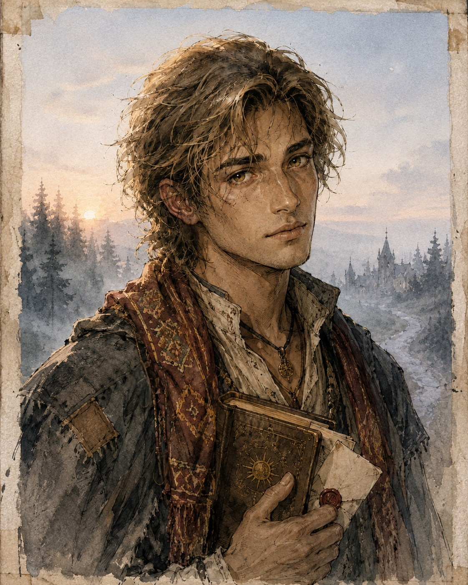

GRACZ
Miauriusz
PelagiettaOpis postaci, historia, motywacja i najważniejsze wydarzenia z kampanii.
Opis postaci, historia, motywacja i najważniejsze wydarzenia z kampanii.

Opis postaci, historia, motywacja i najważniejsze wydarzenia z kampanii.

Opis postaci, historia, motywacja i najważniejsze wydarzenia z kampanii.

Opis postaci, historia, motywacja i najważniejsze wydarzenia z kampanii.

†Miejsce na opis postaci, okoliczności śmierci oraz jej wpływu na dalszą historię drużyny.